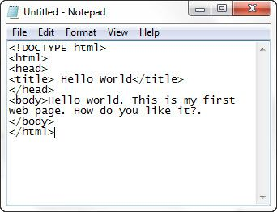

Os primeiros computadores surgiram na década de 1940 e possuíam somente dois níveis de linguagem: o de máquina, no qual toda a programação era feita, e o da lógica digital, onde os programas eram efetivamente executados.
Em 1951, foi projetado um computador de hardware simplificado, com três níveis, que executava um pequeno conjunto de microinstruções armazenadas, o que exigia menos circuitos eletrônicos. A partir daí começou a evolução das linguagens e as arquiteturas das máquinas, impulsionadas, principalmente, pelo aparecimento de um novo conceito na história da computação: os Sistemas Operacionais.
Veja algumas curiosidades sobre a história do computador:MARK 1 – 1944
Os primeiros computadores eletrônicos surgiram na mesma época na Alemanha, Inglaterra e nos Estados Unidos, lar do Mark 1. Com 4,5 toneladas, ele demorava seis segundos numa multiplicação!
WHIRLWIND – 1953
Esse computador era o mais rápido do seu tempo: ele fazia uma multiplicação em 0,025 segundo. Mas ainda era uma carroça, equivalente, hoje, à velocidade de um processador de 1 MHz.
ATLAS – 1962
Foi nessa invenção inglesa que apareceu a primeira memória virtual, tecnologia usada até hoje e que permite trabalhar com diferentes programas ao mesmo tempo
MOUSE – 1968
O americano Douglas Engelbart lançou um aparelhinho chamado “bug”. Ele não fez muito sucesso até os anos 80, quando ganhou o apelido de “mouse”
MICROSOFT – 1975
Dois estudantes americanos, Bill Gates e Paul Allen, na época com 19 e 22 anos respectivamente, adaptaram a linguagem basic para o Altair. Esse foi o primeiro programa da Microsoft.
Internet – 1990
Desde 1969, um sistema de rede chamado Arpanet era desenvolvido em paralelo aos computadores. Em 1990, com a criação da linguagem HTML, a Internet é oficialmente inaugurada.
MICRO DE 100 DÓLARES – 2005
O desafio, agora, é democratizar o acesso aos computadores. Com estrutura simples, o MIT propõe um micro que custe 100 dólares. Mas ainda é só um conceito.
HTML é a sigla para HyperText Markup Language (Linguagem de Marcação de Hipertexto, em inglês). Foi criado na década de 1990 pelo físico britânico Tim Berners-Lee, considerado o “pai da web”, para auxiliar na formatação dos documentos de pesquisas compartilhados entre ele e seus colegas.
Com o desenvolvimento dos navegadores e a popularização da internet, o HTML passou a ser utilizado na criação de sites, tornando-se um dos pilares da “World Wide Web”. Atualmente, a tecnologia evoluiu e é utilizada em conjunto com outras ferramentas, como o CSS e o JavaScript, no desenvolvimento de sites e aplicativos web dinâmicos.
O HTML é uma linguagem de marcação com a qual os elementos de uma página são identificados e definidos, geralmente, por um par de marcadores conhecidos como tags. Esses elementos podem ser desde textos e suas formatações, como parágrafos, sublinhados e links, até conteúdos multimídia, como imagens e vídeos.
As tags descrevem a estrutura semântica de uma página, ou seja, a organização de suas informações, que então é recebida, interpretada e renderizada pelo navegador.
Abaixo, um exemplo de uma página HTML que exibe a mensagem “Olá, mundo!” em um parágrafo.
Cada tag HTML tem um significado semântico e define um bloco de conteúdo que pode ser manipulado pelo navegador. Por exemplo, as tags podem delimitar um parágrafo, texto em negrito, texto itálico e assim vai.
O uso das tags HTML são extremamente úteis porque permitem que os navegadores interpretem e apresentem corretamente o conteúdo. Além disso, as tags HTML também podem ser usadas para aplicar estilos a um documento HTML usando folhas de estilo em cascata (CSS).
As tags HTML são elementos usados para marcar e formatar os conteúdos: textual ou visual em documentos HTML. Cada tag HTML tem um nome e uma sintaxe que determina como ela deve ser aberta e fechada.
Já para negritar pode ser usada a tag <Strong> ou <b> no início e </Strong> ou </b> para finalizar.
Para finalizar a utilização de uma tag pode ser usada uma barra (/), sendo que no caso das tags de autofechamento, não há necessidade da presença desse caractere.